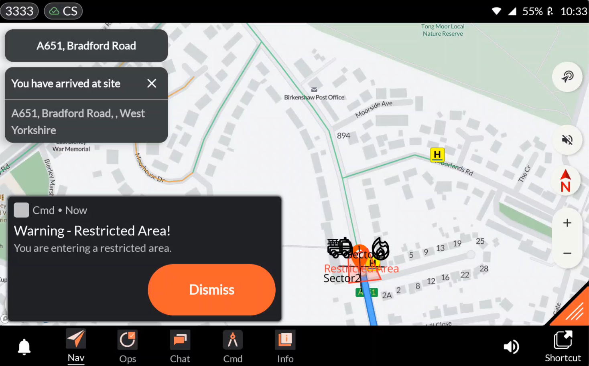

Application: Command¶
Developer: Evam
Availability: World-wide
Description: The Command app is seamlessly integrated into Vehicle Services, delivering a complete On-Scene Incident Command solution. It empowers teams with real-time control, coordination, and the tools needed to manage incidents effectively.
Place markers and symbols on maps effortlessly.
Draw lines, cordons, and restricted zones.
Add text annotations and freehand drawings as needed.
Measure distances and areas with precision.
Add text annotations and freehand drawings as needed.
Share updates instantly with team members and control operators.
Once your drawing is published, it instantly appears on the navigation map for all resources assigned to the same incident.
User instructions¶
The overall functionalities of the Command app are as follows:

Centre on Vehicle Position: Centres the map on the vehicle’s current position.
Centre on Incident Destination: Centres the map on the position of the incident.
Undo Map Annotation: Pressing the cross icon undoes the map annotation action.
Marker Library: The user can select a desired marker from the library and place it on the map by tapping the intended location.
Line Draw Tool: Allows the user to draw a line on the map by tapping the start and end points.
Cordon Tool: Allows the user to access the cordon tool and select the type of cordon they want to add to the map. Examples include Standard Cordon and Restricted Area Cordon. The user creates the cordon by placing points on the map to define its area.
Text Tool: Allows the user to add text to the drawing. Simply tap the location on the map where the text should appear, enter the desired text, and then press the checkmark next to the text box to confirm.
Free Draw Tool: The Free Draw Tool enables users to sketch directly on the map without predefined shapes or points.
Measurement Tool: Allows the user to measure distances and areas on the map. Supports both metric and imperial units, as well as hose lengths. Note that measurements are not shared with other users - they are intended as a personal tool for assessing distances or areas.
Share Drawing: Pressing Share sends the drawing to all resources assigned to the incident.
Entering a restricted area triggers a notification¶
Entering a restricted area triggers a notification with an audible alert, ensuring that users are aware and able to take appropriate action.

Configuration¶
The Command Configuration is fully self-service and managed by your organization through the Command Configuration tool. Here, you can select which markers, cordons, and other elements should be available for your users.
You may access the configurator here.
FAQ¶
Can I access the command drawing from the web and view it in the control room?
Yes – with Evam Central Services, users can access and edit command drawings on both web and mobile platforms. If you would like to purchase user licenses for Evam Central Services, please contact your Evam sales representative.